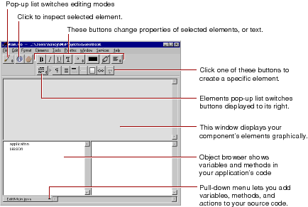

Table of Contents
Table of Contents  Next Section
Table of Contents
Next Section
Table of Contents  Previous Section
Previous Section
The toolbar at the top of the window contains several buttons you use to create the content of your component. WebObjects Builder also has menu commands corresponding to these buttons.

Note: Depending on the width of the window, the toolbar may appear as two rows or one.
Table of Contents Next Section